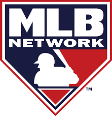
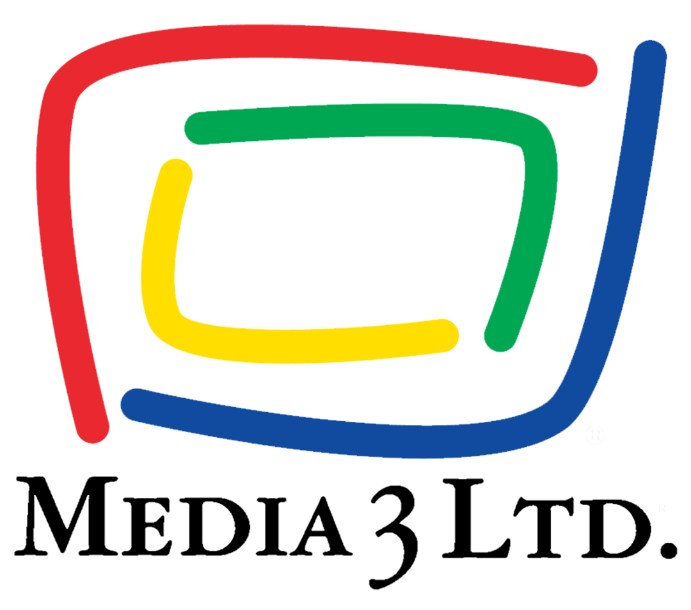

PROFESSIONAL EXPERIENCE
 MLB Advanced Media/MLB Network | Multimedia Producer/Broadcast Associate | Aug 2016 - Nov 2018
Edited and produced scripted daily highlight packages and original content for game recaps, news hits, condensed games and player/team sizzle reels for MLB.com and MLB Network reaching 75+ million subscribers.
Collaborated with show producers and on-air talent to coordinate segment ideas and matching video content for daily shows.
Led meetings with research department to ensure all clip metadata was factually accurate; provided quality control of content before release on Major League Baseball website.
CBS Sports Network | Broadcast Associate | Jul 2013 - Jul 2016
Coordinated and executed all graphics production on live remote sports broadcasts reaching 55+ million households; sports covered included college football, basketball, baseball, lacrosse, and US Open Tennis.
Managed licensed music submission process across entire remote programming department to meet proper approval for track ausage; ensured 100% on-time submission completion of music cue sheets to adhere to music rights agreement.
Department liaison on feature shoots to ensure remote production needs were filled.
 Liveshots DC | Technical Producer | Jun 2012 - Jun 2013
Managed all studio operations and scheduled fiber and satellite bandwidth for live studio hits between third party broadcast facility and various television networks.
Operated robotic cameras and monitored control room communication during broadcast windows.
Worked directly with high profile guests on a daily basis, including politicians, journalists and media personalities.